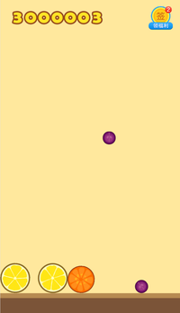

合成大西瓜
声明，本项目仅帮助大家学习技术及娱乐，切勿将修改后的网站大规模传播及商用，以避免侵权！
最简单的魔改发布『 合成大西瓜 』，不用改代码，修改配置即可！
有帮助的话，求个大大的 star，有疑问请联系 wx：liyupi66
遇到问题可以先阅读本文档最后『 问题及解决 』
1 月 31 日晚 21 点，bilibili 直播交流，程序员鱼皮
详细教程：魔改和上线你的合成大西瓜，最全教程！
未修改版在线玩：https://daxigua.liyupi.com
魔改版在线玩：https://dadaxigua.liyupi.com
未修改版源码：https://github.com/liyupi/daxigua/releases/tag/1.0.0

本地启动
安装 serve 工具：
1
npm i -g serve
进入 daxigua 目录，运行 serve：
1
serve
打开浏览器访问 localhost:5000 即可！
快速魔改
按照下列说明修改即可，持续补充
改分数：改 extraSettings.js 文件
改图片：替换 res/raw-assets 目录下指定目录的图片，必须同文件名、后缀、尺寸，成功覆盖可生效，可替换素材文档
无敌模式：改 extraSettings.js 文件
指定第一个水果：改 extraSettings.js 文件
指定下次出现的水果：改 extraSettings.js 文件
大水果合成小水果：在 project.js 代码中搜索 “大水果合成小水果”
让水果更 Q 弹：改 extraSettings.js 文件，原理参考
水果下落速度减缓：改 extraSettings.js 文件，原理参考
替换音乐：，覆盖 res/raw-assets 目录下相同的音乐，可替换素材文档
替换背景：和改图片原理相同，可替换素材文档
去广告：将广告图片替换为同背景色底图
替换广告链接：改 extraSettings.js 文件
改网站标题：改 extraSettings.js 文件
开启选分弹窗：改 extraSettings.js 文件
魔改原理
请先阅读：魔改和上线你的合成大西瓜，最全教程！
我给 project.js 文件补充了注释，大家可以搜索关键字，如 “改分” 来快速定位，学习修改原理。
问题及解决
无法安装 serve 或者 Vercel？
答：如果报找不到 npm，请先安装 npm。
如果安装中卡住，试着按下键盘（可能假死），还不行的话先用 npm 安装 cnpm（国内镜像，比较快）：
1
npm install cnpm -g --registry=https://registry.npm.taobao.org
再用 cnpm 安装：
cnpm i -g serve或cnpm i -g vercelVercel 网址被微信拦截怎么办？
答：可以把网址复制到浏览器打开，也可以申请一个域名，在 Vercel 和服务提供商配置域名解析。
Vercel 基本是海外的服务器，无需备案。怎么在电脑上浏览网页游戏？
答：在浏览器中，按 F12 打开开发者工具，点击像手机一样的图标即可。
为什么 serve 后，打开网页一片空白？
答：大概率是你在错误的目录下执行了 serve，请务必在 index.html 所在的文件夹下执行 serve。
执行 vercel 命令显示 signUp？
答：要先去 Vercel 官网 注册。
vercel 邮箱验证失败？
答：先确认邮箱是否正确，如果验证失败，大概率是网络原因，请尝试 4G 等网络。
怎么使用 vercel 同时上线多个版本？
答：在输入 vercel 后，选择不和已有项目关联（link），并且使用一个新的项目名（project name）。
想在修改文件后重新搞个新版本，但输入 vercel prod 后，直接覆盖了，而没有让我选择是否和现有项目关联（link），怎么办？
答：执行 vercel 后，会在本地生成
.vercel隐藏目录保存之前的发布信息，删掉该目录即可。导出网址后，我修改了图片，然后游戏中还是原来的图片？
答：网址读取的是远程的文件，只改了本地当然没用！再次执行 vercel 或腾讯云命令，把最新文件传上去。